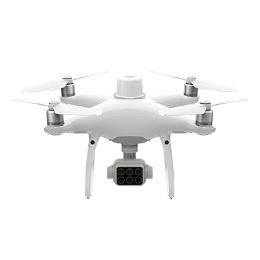

Drone DJI P4 Multispectral

| Drone DJI P4 Multispectral | |
|---|---|
| Localização: | Gab. 1.86 Edf. 7 |
| Responsável: | Susana Costas |
| Operador: | Utilizador |
| Princípio de Funcionamento: | Drone de Controlo Remoto |
| Fabricante: | DJI |
| Modelo: | P4 Multispectral |
| Tipo: | Drone |
| Website: | DJI |
Drone DJI P4 Multispectral, concebido para aquisição de imagens RGB e multiespectrais em aplicações de investigação, monitorização ambiental, agricultura, levantamento e mapeamento. O equipamento integra uma câmara RGB e um sistema multiespectral de seis bandas, permitindo obter informação detalhada sobre as características espectrais da superfície e gerar mapas e produtos georreferenciados.
O sistema combina as câmaras com um módulo RTK/GNSS de elevada precisão, permitindo a aquisição de dados espacialmente referenciados e a realização de levantamentos automatizados. É particularmente adequado para a monitorização de vegetação, habitats, áreas costeiras, massas de água e outros ambientes, bem como para estudos de variabilidade espacial e alterações ao longo do tempo.
Principais Aplicações
- Monitorização de vegetação e habitats;
- Avaliação do estado e vigor da vegetação;
- Mapeamento de áreas costeiras e terrestres;
- Monitorização de alterações ambientais;
- Levantamento de massas de água e zonas húmidas;
- Estudos de distribuição espacial de organismos ou comunidades vegetais;
- Agricultura de precisão;
Principais Vantagens:
- Seis câmaras integradas para aquisição RGB e multiespectral;
- Cinco bandas espectrais específicas para caracterização da vegetação e superfície;
- Sistema RTK para elevada precisão de posicionamento;
- Sincronização temporal e espacial entre as câmaras;
- Sensor de luz solar integrado para compensação das variações de iluminação;
- Planeamento e execução de missões de voo automatizadas;
- Aquisição de dados adequada a processamento fotogramétrico e SIG;
- Possibilidade de gerar NDVI e outros índices espectrais;
- Elevada repetibilidade entre levantamentos;
Específicações Técnicas:
| Específicação | Valor |
|---|---|
| Fabricante | DJI |
| Modelo | P4 Multispectral |
| Peso | 1487 g |
| Distância Diagonal | 35.0 cm |
| Veloc. de Subida Máx. | 6 m/s (automático) 5 m/s (manual) |
| Veloc. de Descida Máxima | 3 m/s |
| Velocidade Máxima | 58 k/h |
| GNSS | GPS + GLONASS + Galileo |
| Camâra - Sensor | Seis 1/2.9" CMOS, incluíndo 1 sensor RGB e 5 sensores monocromáticos |
| Camâra Multiespectro - Comprimetnos de Onda | Cores (RGB), 450nm (azul), 560nm (verde), 650nm (vermelho), 840nm (quase-infravermelho) |
| Lente | FOV: 62.7° 5.74 mm Abertura f/2.2 |
| Resolução de Imagens | 1600x1300 |
| Formato de Imagem | JPEG (luz visível)/ TIFF (multi-espectro) |